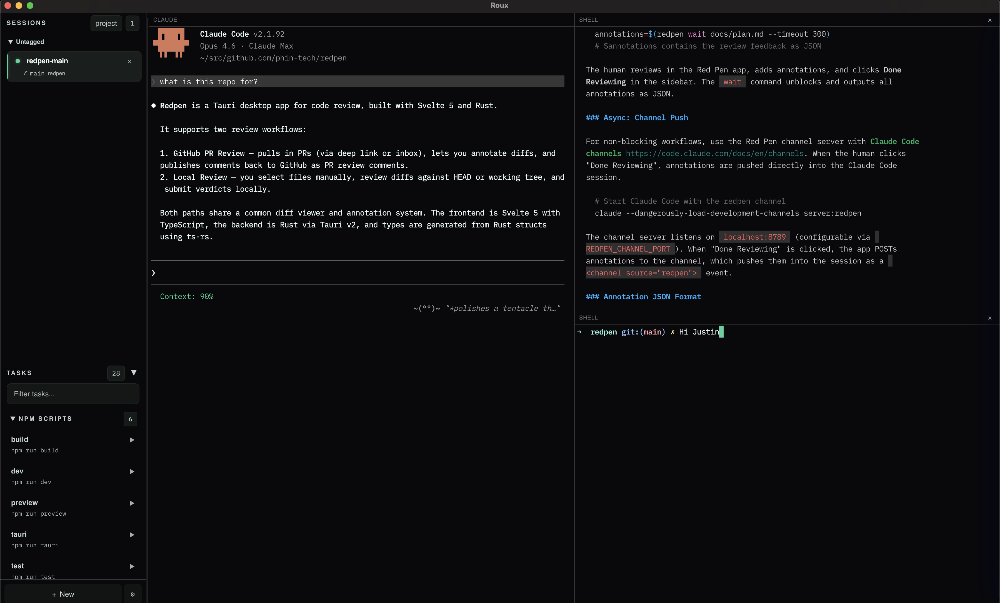

F.01
MULTI-SESSION
Independent Claude Code sessions, each with its own git worktree.
Run multiple agent sessions side-by-side with split panes, stacked tabs, shell terminals, and persistent layouts — all in a single native window.
Independent Claude Code sessions, each with its own git worktree.
Horizontal & vertical splits with same-direction flattening.
Zellij-style tab stacking; collapsed title bars show inactive panes.
Quick access to every action via cmd+k.
Vimish pane & session actions via cmd+; with inline rename.
KDL config; ships with default + tmux presets.
Pane layouts survive restarts. Shell panes respawn automatically.
Closed sessions move into a history pane; restore, open notes, or discard.
Docked terminal input editor with selection reinput & context chips.
Paste a GitHub PR URL; Roux preps the review branch & worktree.
Group sessions across repos. Save blueprints. Inject project context.
Plain-text scoped notes (cmd+b); Obsidian-compatible markdown.
Menus on macOS, Windows, Linux — wired to the same keymap as the palette.
Inspect and reinstall CLI / hooks / Claude skill from Settings.
roux scripts splits, sessions, commands, focus — from any shell.
Expose sessions, panes, terminal output & notes via roux mcp.

| ACTION | SHORTCUT |
|---|---|
| Split horizontal | cmd+d |
| Split vertical | cmd+shift+d |
| Close pane | cmd+w |
| Toggle stack | cmd+shift+s |
| Focus left / down / up / right | alt+h j k l |
| Toggle notes | cmd+b |
| Toggle multiline editor | ctrl+g |
| Command palette | cmd+k |
| New session | cmd+n |
| Settings | cmd+, |
// note: every shortcut is editable in
~/.config/roux/keymap.kdl. A tmux preset ships in the box.